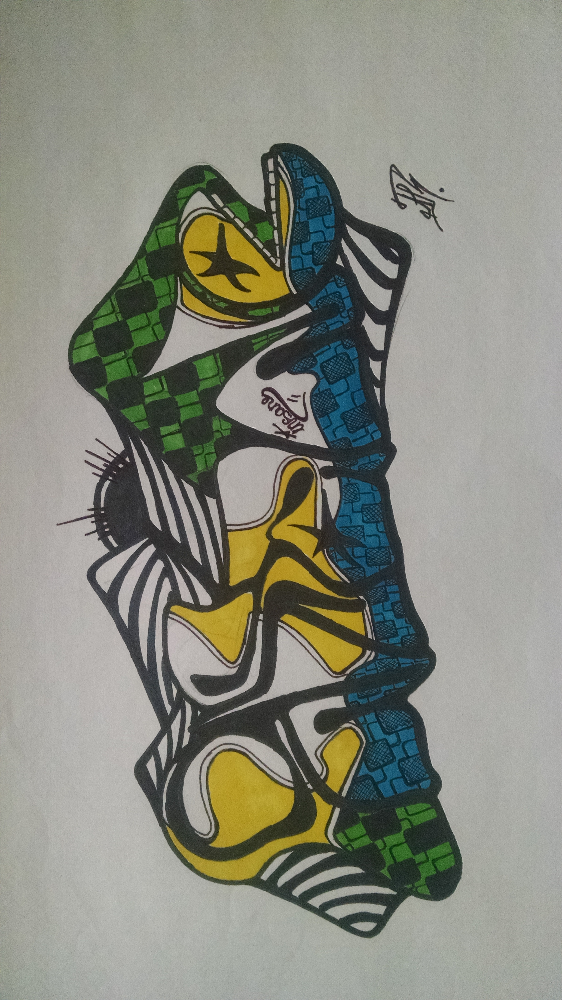

Drawing is a great and inexpensive way to pass time. One type of drawing is graffiti. On this website we'll explore paper graffiti.
| Name | Description | Where to buy |
|---|---|---|
| Paper | Markers have a tendency to bleed through paper and ruin the paper you are working on. For best results I like some heavy duty sketchbook paper. | Amazon is a great place to browse/buy. |
| Pensil and eraser | I first light sketch with pensil to get some idea of placement size volume and style. Any pensil will do, I prefer 2H pensil. | Pick up at your local art/office supply store or look online. |
| Markers | Experiment with different markers and find the ones you like most, my favorite are utrecht design markers. | You can find them here. |